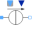

SourcesAC singlephase sources |
|
Package Contents
|
Constant AC voltage |
|
|
Variable AC voltage |
|
|
Voltage source with integrated frequency sweep |
|
|
Constant AC current |
|
|  |
Variable AC current |
|
Current source with integrated frequency sweep |
Information
This information is part of the Modelica Standard Library maintained by the Modelica Association.
This package hosts sources for quasi stationary single phase circuits. Quasi stationary theory for single phase circuits can be found in the references.